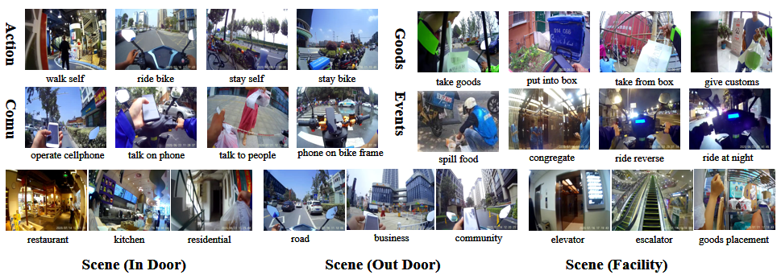

Ego-Deliver, a new large-scale egocentric video
benchmark recorded by takeaway riders about their daily work. To
the best of our knowledge, Ego-Deliver presents the first attempt in
understanding activities from the takeaway delivery process while
being one of the largest egocentric video action dataset to date.
We believe is pivotal to future research in this area.
